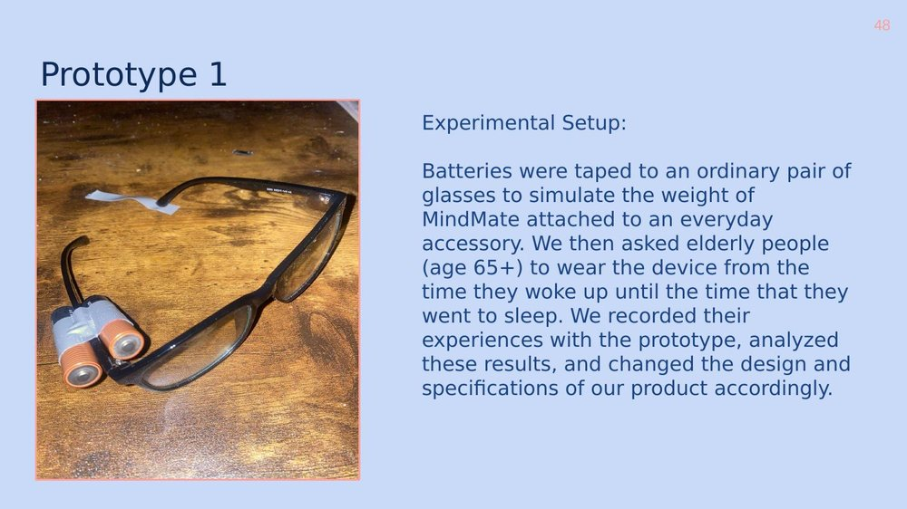
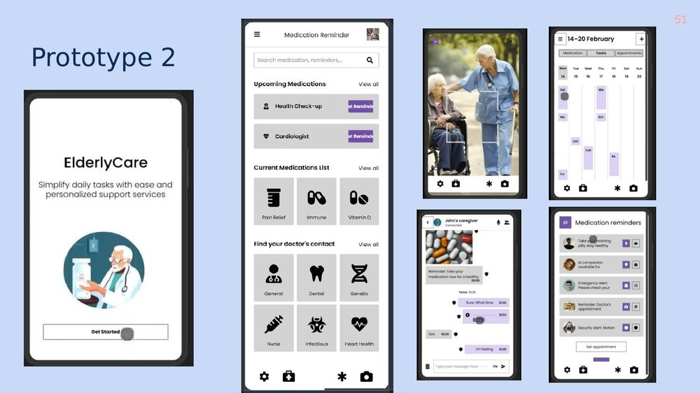
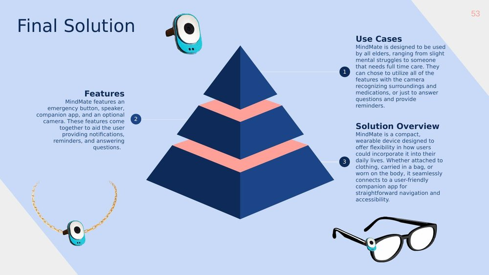

MindMate — A Wearable AI Assistant for Elderly Independence
A full product development cycle for Engineering Innovation, from need-finding through market research, ideation, prototyping, and feasibility analysis.
Team: Gabriel Mora (Mechanical Engineering), Bhuvan Dhand (Computer Science), Noah Norwitch (Electrical Engineering), Yash Bhalla (Computer Science), Ben Mellin (Materials Science and Engineering)
Need
As people age, cognitive decline makes everyday tasks, medications, appointments, finances, harder to manage independently, increasing reliance on caregivers and risk to wellbeing. The need statement we converged on: reduce the cognitive load on elderly people managing their day-to-day tasks and activities. With the global population aged 60+ projected to double by 2050, we treated this as a growing, underserved problem rather than a niche one.
Research
We mapped 28 stakeholder groups, from elderly individuals and caregivers to insurance companies and device manufacturers, then went out and talked to them directly.
The clearest signal across interviews: elderly users are hesitant to adopt new technology unless it's genuinely simple, and family caregivers are already absorbing most of the cognitive burden themselves. Only half of survey respondents said they were comfortable using technology at all, which shaped nearly every design decision that followed, simplicity had to outweigh feature count.
Ideation
We benchmarked existing solutions, reminder apps, wearables, smart pill dispensers, against affordability, ease of use, personalization, dependability, and independence, and found a clear white space: most products traded off ease of use for functionality, or vice versa. Using MediSafe as a reference competitor, we applied SIT (Systematic Inventive Thinking) tools, subtraction, division, multiplication, task unification, and attribute dependency, to systematically generate new directions rather than brainstorming unconstrained.
That process converged on MindMate: a wearable, styleable AI assistant paired with a companion app, ElderlyCare, that lets caregivers manage reminders and monitor wellbeing without the elderly user needing to navigate a complex interface themselves.
Prototyping
We tested the concept in two stages. Prototype 1 addressed physical feasibility: batteries were taped to an ordinary pair of glasses to simulate the weight of a wearable device, then worn by elderly volunteers (65+) for a full day to test comfort and practicality.

That feedback directly shaped the next iteration, showing form factor flexibility (clip, necklace, or bracelet) mattered more than a single fixed design. Prototype 2 shifted to the software side, a working app interface tested with both elderly users and caregivers to see whether they could complete basic tasks unassisted.

Final Solution
MindMate combines a compact wearable device, flexible enough to clip to clothing, a bag, or the body, with the ElderlyCare companion app. Core features: voice interaction, reminders and checklists for medication and appointments, an emergency alert button, and optional camera functionality for object recognition and caregiver monitoring.

Feasibility
We stress-tested the concept with PESTEL and SWOT analyses, a Porter's Five Forces competitive assessment, an IP landscape review, and a structured safety hazard analysis covering risks from allergic reaction to skin contact materials through data privacy and false emergency alerts. As the materials engineer on the team, I contributed to the physical device's material selection and hazard analysis, given a wearable in constant skin contact has real constraints around biocompatibility, durability, and comfort that software-only teammates weren't positioned to evaluate alone.
Outcome
The final pitch presented MindMate as a two-part solution, physical device plus companion app, backed by primary research, two rounds of user testing, and a full feasibility and go-to-market analysis, to a faculty jury in the UF innovation department. The project was as much a case study in structured product development, need-finding through SIT-based ideation through iterative prototyping, as it was about the product itself.